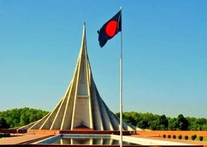

<p style="text-align: justify;">The National Memorial at Savar is a symbol of the nation's respect for the martyrs of the war of Liberation. It is built with Concrete, but made of blood. IT stands 150 feet tall, but every martyr it stands for stands so much taller. It is an achievement the dimensions of which can be measured but it stands for an achievement which is immeasurable.</p>
